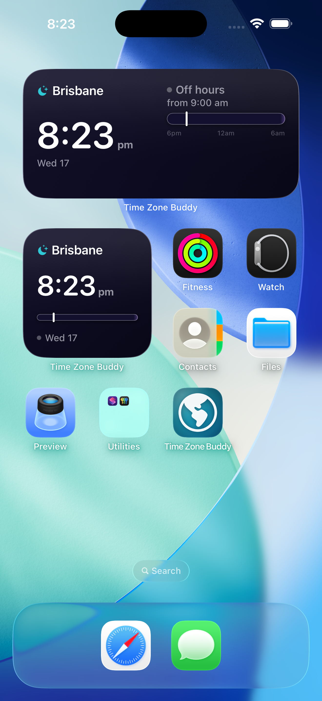
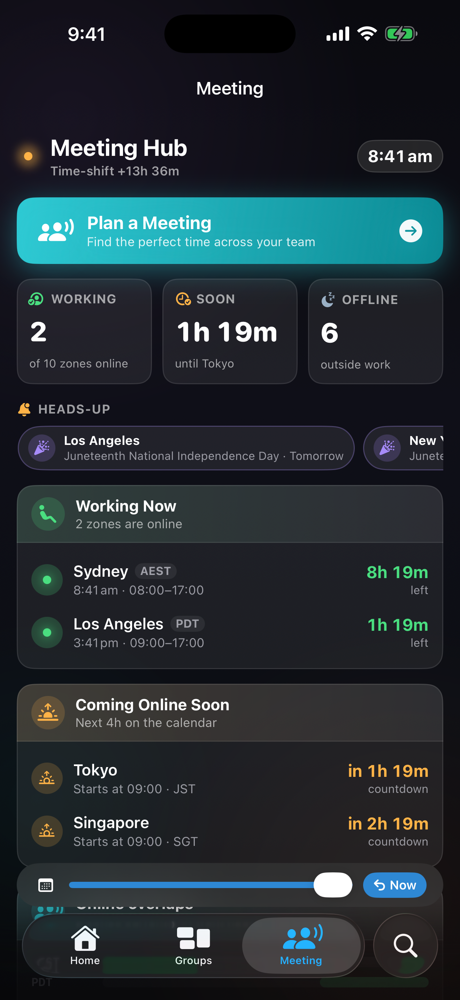
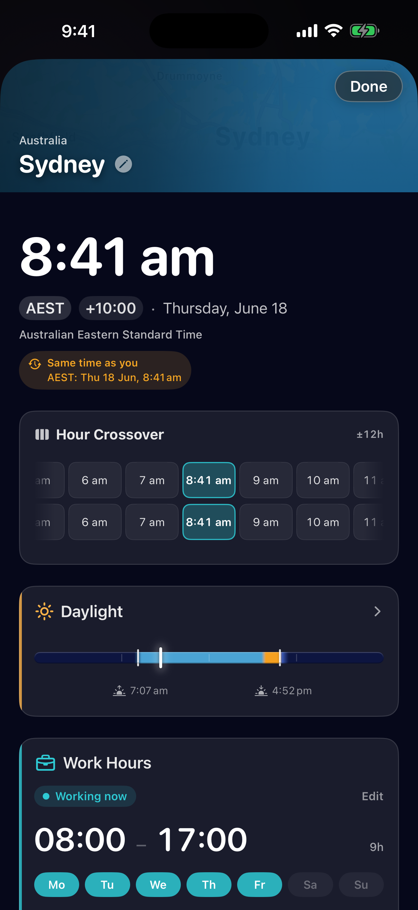
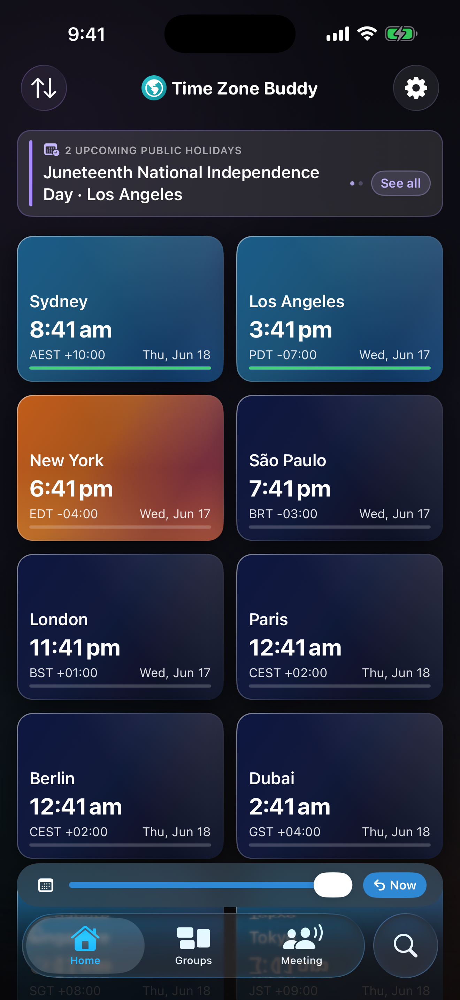

World Clock & Time Zone App for iPhone.
Aurora-inspired zone cards, intelligent scheduling, DST alerts, and Home Screen widgets — all on your device. Zero data collected.


Widgets on your Home Screen
Aurora-inspired zone cards, intelligent scheduling, DST alerts, and Home Screen widgets — all on your device. Zero data collected.

Widgets on your Home Screen
Time Zone Buddy is a privacy-first world clock app and time zone app for iPhone and iPad. Track as many time zones as you need, see daylight and work hours at a glance, find the perfect meeting window across continents, and get notified before every clock change — all without sending a single byte to our servers. Whether you work with a global team or just need a reliable world clock, time zone converter, or iPhone time zone widget at your fingertips, Time Zone Buddy has you covered.
Aurora zone cards shift from warm amber at sunrise to vivid cerulean at midday — and deep navy at night. In real time, for every zone you're watching.
Drag the time-shift bar ±12 hours, pick a future date, and instantly see the clock in every zone. No calculator, no guessing.
Meeting Overlap ranks every possible overlap window by how many people it works for. Share the result as a clean image — no app required on their end.
DST alerts appear in-app the week before a transition, with optional push notifications at 7 days out, the business day before, and the morning it happens.
The free Single Zone widget keeps any city's live time on your Home Screen in small or medium size, with the same daylight-aware shading as the app — the medium size adds a day timeline and an at-a-glance work-hours status. Lifetime and Plus add Lock Screen clocks and a live Meeting Hub widget showing who's working right now across all your zones.
Long-press the app icon to plan a meeting, add a zone, or jump straight to alerts. Ask Siri or use the Shortcuts app: “Plan a meeting in Time Zone Buddy.”
Spotlight indexes every zone you've saved with its country flag, region, UTC offset, and both abbreviations — search EST, EDT, AEST, or AEDT any time of year and the right zone surfaces. Tap to open it instantly.
A native SwiftUI app for iPhone and iPad. Liquid Glass surfaces, App Intents, Siri, Spotlight, Quick Actions, the Share Sheet, iCloud Sync, full VoiceOver and Dynamic Type support, and Reduce Motion respect — it feels like Apple shipped it.



Widgets on your Home Screen Meeting Hub Detail View Home — Aurora Zone Cards
Start free. No tricks, no dark patterns. Upgrade when it's right for you.
$0
Always free
Download Free$14.99 /year AUD
or $2.99/month AUD
Get Plus$39.99 AUD
One-time purchase · Yours forever
Buy LifetimeTime Zone Buddy is built by a solo developer. Your support keeps it ad-free and actively improved.
Prices shown in AUD. Your local price is set by Apple and displayed at checkout — it will vary by region. iCloud Sync is Plus-only. Family Sharing is included with the Annual plan (not Monthly or Lifetime). Lifetime is a one-time purchase — no subscription, no renewal.
The privacy-first world clock app and time zone tracker, built for iPhone and iPad.
Aurora zone cards, smart search by city or country, your local zone at the centre. Not just a clock.
No account required. No data sent to our servers. Everything lives on your device. No ads for Plus or Lifetime — ever.
Full VoiceOver, Dynamic Type, Reduce Motion. Every screen, every feature.
Free to download. Upgrade when you're ready.